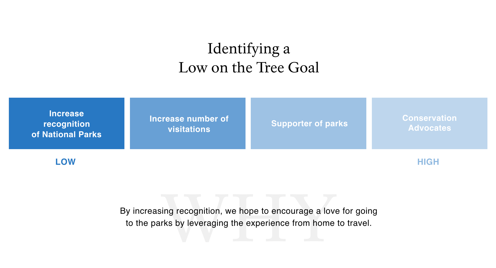
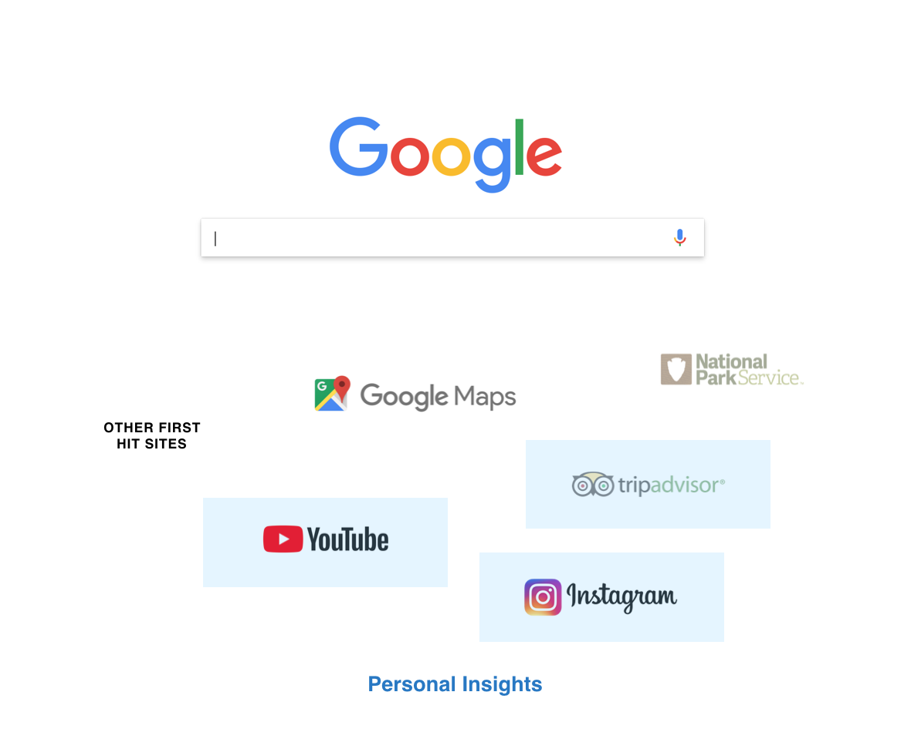
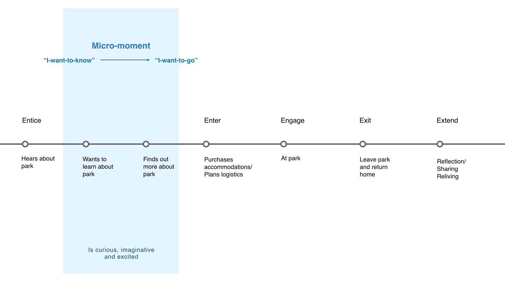

This digital intervention for US National Park Service is designed for new audiences so that they will be able to foster the values of natural and cultural conservation and activism while encouraging the public use and joy of their parks and landmarks. This will allow NPS to address concerns the future of its parks visitorship, as well as ensuring the protection of natural and cultural resources.
US National Park Service (NPS) is known as “America’s Best Idea,” preserving America’s beauty and history in order to pass it on to future generations. NPS is tasked with a ‘dual mandate’; protecting natural and cultural resources while simultaneously providing opportunities for public use and enjoyment.
Engagement with US National Parks have suffered since the 90’s. A disconnect from the values of conservation and love of the outdoor environment has caused apathy in regards to NPS and its parks. With many younger generation Americans disengaged, NPS is at risk of being unable to further its goals of conservation and providing public enjoyment around natural and cultural resources.
NPS makes significant efforts to facilitate recreation in parks, how can we help them achieve preservation and conservation as well? Naturally, this led to the following questions:
This led us to identify a low-on the tree goal rather than directly designing for conservation which is the highest on the tree out of the 4 goals to strengthen a person’s level of connection to parks. Before a person becomes a regular visitor and full supporter of the parks, they first need to be aware of the parks. National parks are more than another outdoor location - they represent a rich culture and symbol of America’s generational heritage. Thus, we decided to focus on increasing this recognition. While our solution doesn’t directly solve for increasing visitation, but it provides more of an opportunity for it to happen through increasing recognition. 
Insights from people’s exploration and discovery behaviours: people go from site to site zooming in and out of map level and trail level to paint a mental model of the destination in relation to their location and goals. For example, they may jump from maps to vlogs on youtube, to reviews on trip advisor and images from other travellers on Instagram. These parallels between these personal accounts allowed us to pick our moment to intervene.
To leverage this moment of when a person wants to learn more about a park and there is an excitement, curiosity and desire for adventure. This moment exists as a micro-moment of “I want to know” teetering into “I want to go”. We wanted to design for this moment as a way of meeting our audience where they’re at.

Zooming into this micro-moment, a person searches for new information to help paint a picture of a destination to see whether it is worthwhile to visit. In the exploratory stage, their search is more broad, and its during this stage where our product excels at servicing the person with quick information - in this case, providing them with a quick glimpse of the on-the-ground trail experience with (is what we predict) enough info to decide whether they want to go or not. If so, their search becomes narrower and more specific, and our solution did its part to help aid their transition into more detailed searches.
There is a benefit in NPS's past partnership between National Parks Service and Arts + Culture, and continuing on this relationship to extend the park-going experience. We also considered creating a solution on the NPS website, but found that our solution would only bloat and create more of a redundancy in their already info-dense platform. With this solution, the value to customers is the ability to make quicker, more informed decisions through glimpses of a park experience guided by a park ranger, and the value to NPS is an increase in brand recognition and the ability to entice more young visitors online. In addition to gleaning insight from the types of audiences who stumble on and use Trail Guides, the value to Google is to strengthen their growing travel eco-system in service to this particular micro-moment, as well as to grow their off-the-road trail experience on Maps.